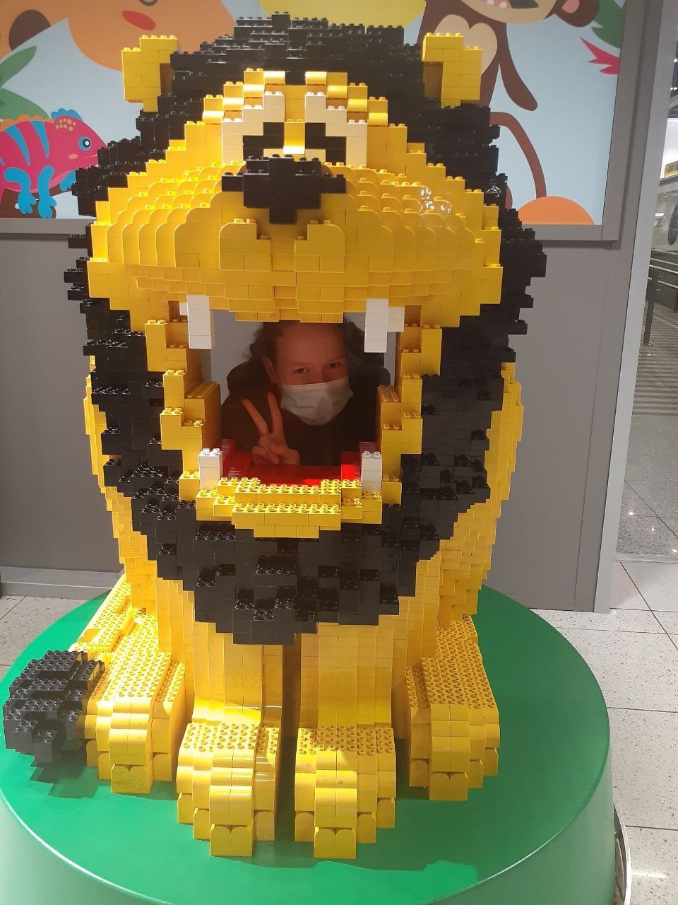
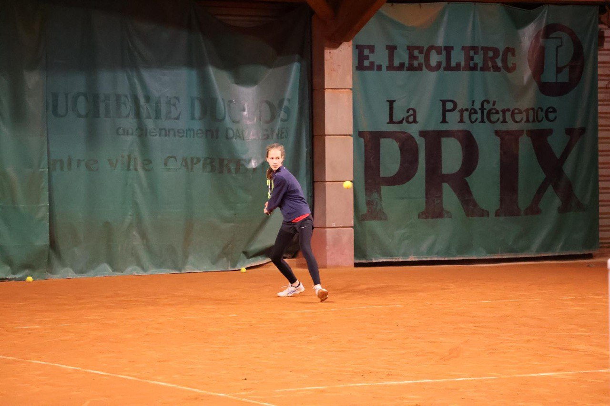
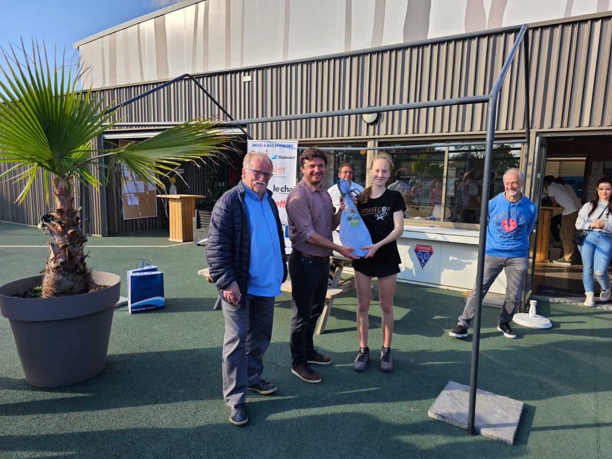
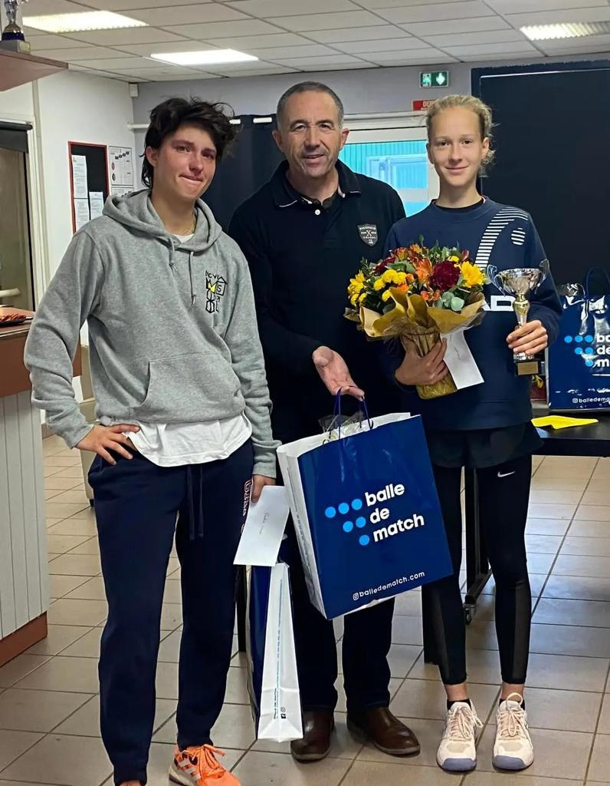
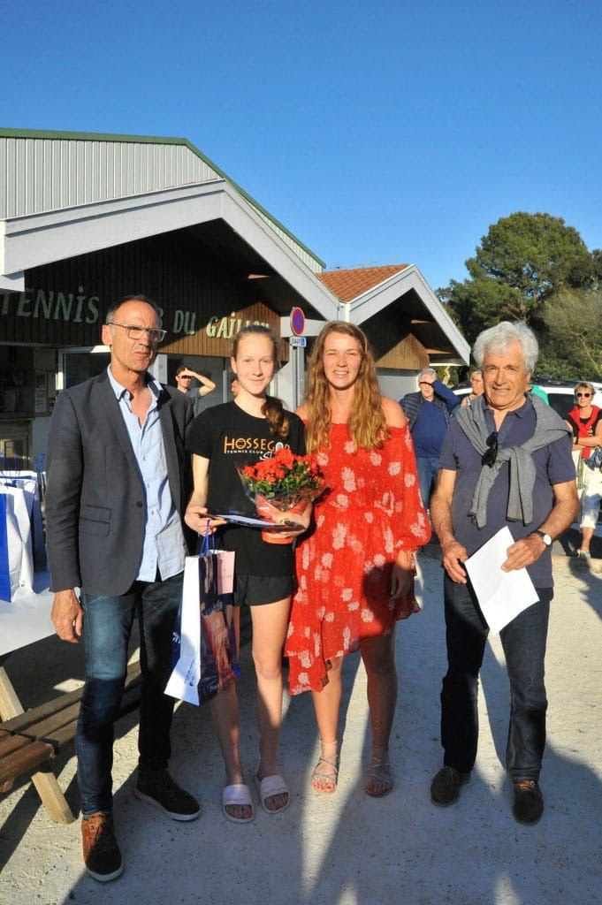
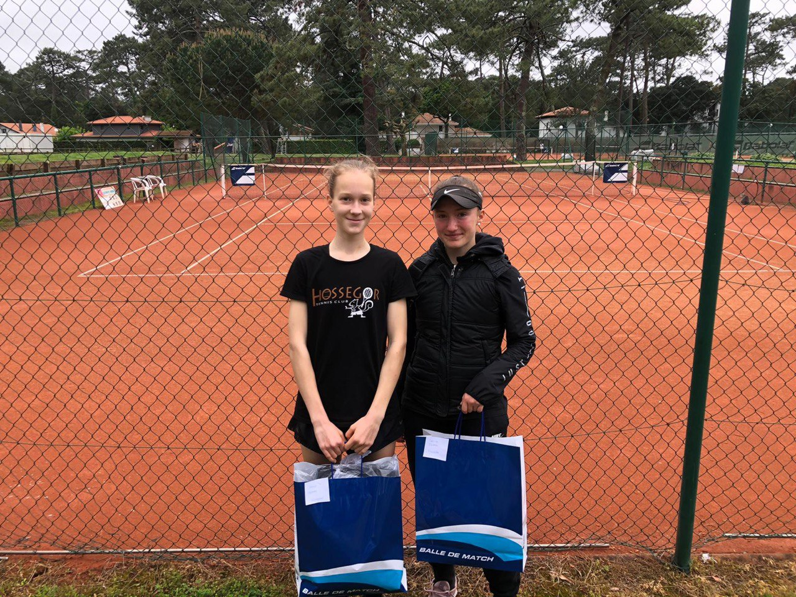

En l’espace de deux ans, j’ai gagné en maturité et je suis devenue plus indépendante. Une fois ma situation stabilisée, j’ai commencé à regarder vers l’avenir. Tout en continuant à suivre l’école à distance en Ukraine, j’ai obtenu le Diplôme National du Brevet avec mention très bien et je suis actuellement scolarisée en classe de seconde au lycée de Tyrosse, avec des résultats très honorables.
Salut,
Je m’appelle Tetiana. Je suis arrivée en France avec ma grande sœur en mars 2022, à l’âge de 14 ans, après avoir fui l’Ukraine.
Mon père a perdu son travail à cause de la guerre et mes parents, restés à Kiev, sont dans une situation financière compliquée. Ma sœur et moi avons été accueillies à Hossegor par des personnes dévouées qui nous ont hébergées, se sont occupées de nous et m’ont offert la possibilité de continuer à jouer au tennis. Cette situation ne pouvait pas durer longtemps. Ma sœur a dû retourner en Ukraine et j’ai été prise en charge par l’Aide Sociale à l’Enfance, qui m’a trouvé une famille d’accueil à Tarnos. Tout cela a été pour moi une période très difficile.

Mais mes objectifs ne sont pas uniquement scolaires : je rêve de devenir joueuse de tennis professionnelle. En effet, je pratique ce sport depuis l'âge de cinq ans et demi et j’ai participé à mes premiers tournois à 10 ans. Deux ans plus tard, j’étais qualifiée au niveau national et même international. Le Covid ne m’a pas empêchée de continuer à jouer. C’est la guerre qui m’a arrêtée.

Pour parvenir à me faire une place parmi les meilleures joueuses de ma catégorie, il faut s’entrainer dur, avec une détermination sans faille, et progresser au classement. Cela ne peut se faire sans participer à des grands tournois nationaux et internationaux. Je travaille donc pendant une partie des vacances scolaires pour contribuer au financement de mes déplacements. En effet, mon coach, qui m’entraîne et m’accompagne en tournois bénévolement depuis plusieurs mois, ne peut pas tout prendre en charge. Je réfléchis également à suivre dès septembre prochain mes cours scolaires en distanciel pour avoir une organisation plus adaptée à ce double projet mais cela a également un coût.
Si vous avez la possibilité de m’aider à devenir joueuse professionnelle tout en poursuivant mes études, je vous invite à déposer la participation de votre choix dans cette cagnotte.
Merci d’avance pour votre aide et je vous tiendrai bien évidemment au courant de ma progression tennistique et scolaire.
Tetiana
Actualités

Text
text text text
text text text
text text text
Gallerie


